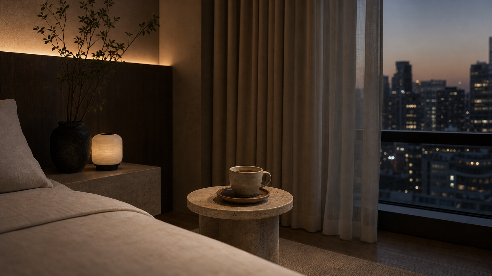
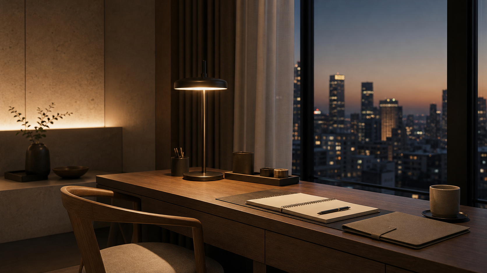
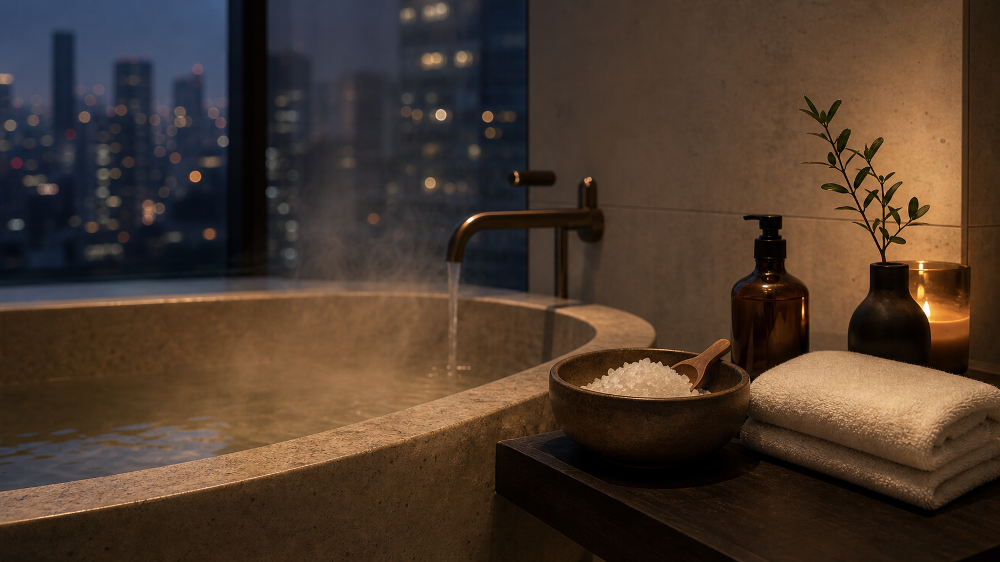
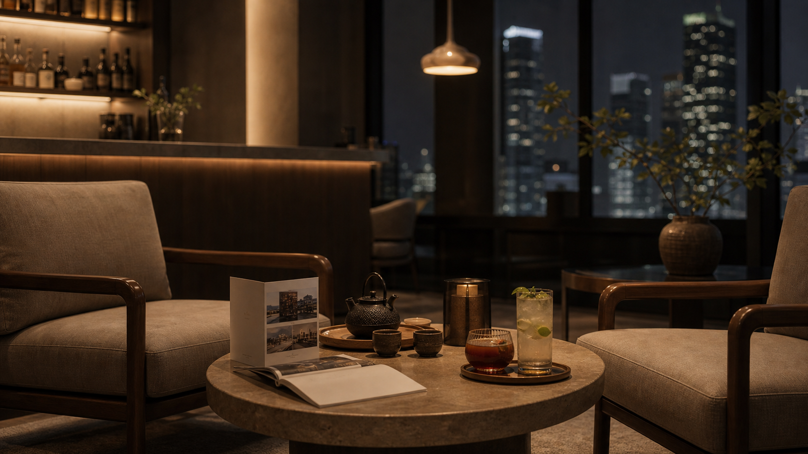
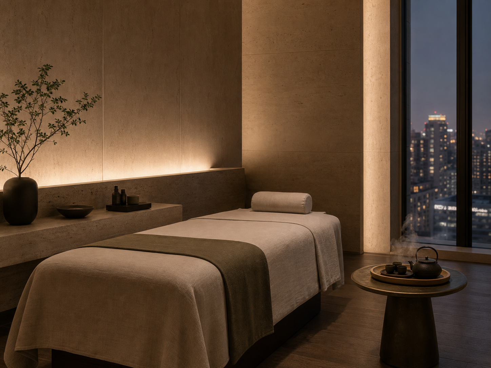
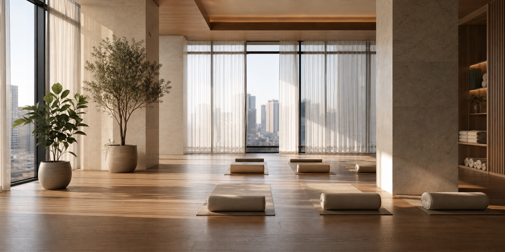
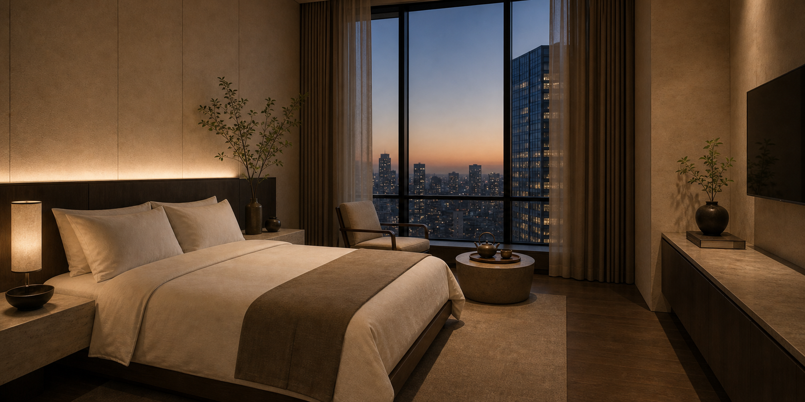

01Calm Mode
온전히 쉬고 싶은 날객실의 조도와 사운드를 낮추고, 따뜻한 허브티를 곁들입니다. 혼자만의 고요한 휴식이 필요한 날에 어울립니다.
허브티 · 저조도 조명 · 차분한 음악Stay Modes
나에게 맞는 휴식 모드를 선택하세요

01객실의 조도와 사운드를 낮추고, 따뜻한 허브티를 곁들입니다. 혼자만의 고요한 휴식이 필요한 날에 어울립니다.
허브티 · 저조도 조명 · 차분한 음악
02업무에 집중할 수 있는 데스크 환경과 조명으로 출장 중에도 일과 휴식의 흐름을 편안하게 이어갈 수 있습니다.
데스크 세팅 · 집중 조명 · 미니 문구 키트
03따뜻한 배스와 아로마, 수면 루틴을 통해 하루의 긴장을 풀어냅니다. 몸과 마음을 깊이 쉬게 하고 싶은 날에 추천합니다.
배스 솔트 · 아로마 · 수면 루틴
04라운지와 바, 주변의 조용한 로컬 스폿을 안내드리며, 혼자 또는 함께 저녁을 여유롭게 보내고 싶을 때 어울립니다.
라운지 안내 · 바 메뉴 · 로컬 큐레이션
Rituals
따뜻한 물과 향, 티 한 잔이 하루의 속도를 천천히 늦춰줍니다.
객실에 들어서는 순간, 은은한 향과 웰컴 티가 하루 종일 쌓인 긴장을 부드럽게 풀어줍니다.
따뜻한 배스와 은은한 조도가 하루의 피로를 조용히 풀어줍니다.
아로마와 음악, 수면 카드가 깊이 잠들 수 있도록 도와줍니다.
Facilities
마음 편히 쉬어가는 공간

가벼운 호흡과 스트레칭으로 몸을 천천히 깨웁니다.
차 한 잔을 곁에 두고, 체크인 전후 시간을 여유롭게 보냅니다.
오늘의 기분과 몸 상태에 맞춰 따뜻한 블렌딩 티를 제안합니다.
Rooms
도시를 바라보며 쉬어가는 공간
객실은 과한 장식보다 낮은 조도, 좋은 소재, 편안한 동선을 우선시합니다. 짧게 머무는 동안에도 편안해지도록 티 세트와 수면 리추얼을 함께 준비했습니다.
짧은 도심 체류를 위한 기본 객실로, 조용한 수면과 티 루틴에 집중합니다.
from KRW 240,000
Every room includes tea set, sleep ritual card, and quiet lighting.

Contact
예약 전 궁금한 점은 언제든 편하게 문의해주세요
27, Yoon-ro, Jung-gu, Seoul, Korea
+82 2 0000 0000
stay@hotelyoon.kr